Alarm Service
Introduction
Alarm Service in TMT software is used by components to raise alarms. Alarms are used exclusively to notify the operator of conditions that require operator intervention. Each alarms includes a severity that must be one of the supported severities such as Warning, Critical, etc. The Alarm Service also provides mechanisms to monitor the health of all components and subsystems in TMT.
Technology
Alarm Service uses Redis for persistence. Redis provides Keyspace Notifications which allows clients to subscribe to Pub/Sub channels in order to receive events affecting the Redis data set in some way.
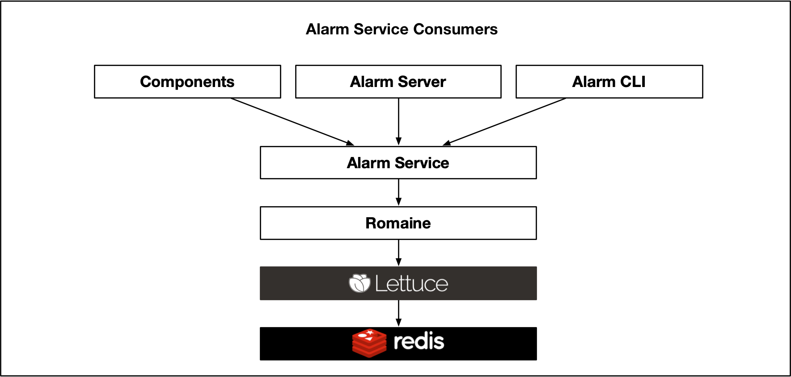
We have created a layer i.e. “Romaine” which converts redis events into an akka stream. Romaine internally uses a java redis library called Lettuce.
Severities
An alarm can have one of the following severities at a given time
| Severity Name | Severity Level |
|---|---|
Okay |
0 |
Warning |
1 |
Major |
2 |
Indeterminate |
3 |
Disconnected |
4 |
Critical |
5 |
Severity can be for a single alarm or aggregated for a component or subsystem.
Health
Health is a higher level abstraction created on top of severities. One or more alarms can be combined to calculate one of the following healths at a given time.
GoodIllBad
Health is calculated based on severity. The current mapping between health and severities is shown in the figure below. Health can be for aggregated for a component, subsystem, or the entire TMT system.
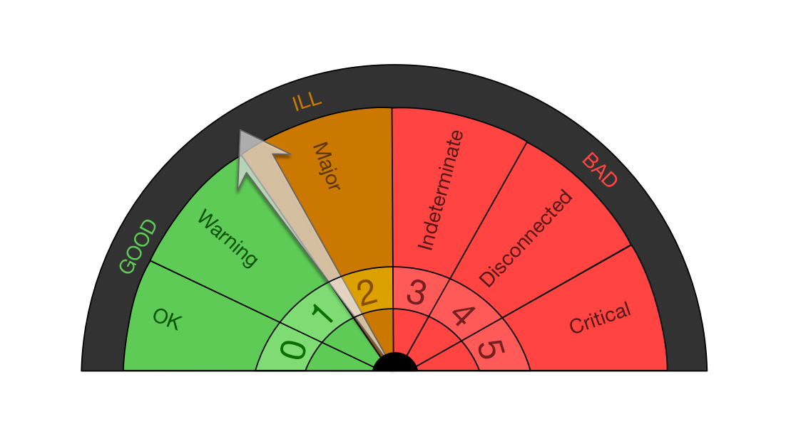
Severity & Health Aggregations
A severity can be associated with an alarm, a component or a sub-system.
Unlike alarms, which has a direct association with severity, components and sub-systems don’t have a direct association with severities. They have aggregated severities based on severities of their children.
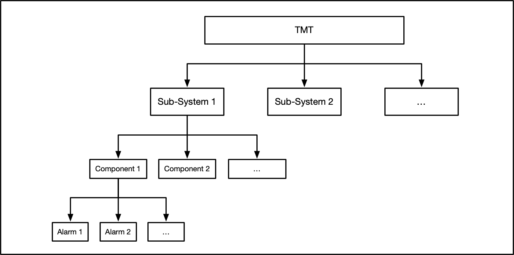
A components aggregated severity is equal to severity of its child alarm with “maximum” severity. Similarly, a sub-system’s aggregated severity is determined by its child component with maximum severity.
Health aggregation works on top of severity aggregation. A components aggregated health is calculated by first calculating its aggregated severity and then mapping it to health. Sub-System health aggregation works in the same way.
Redis Storage
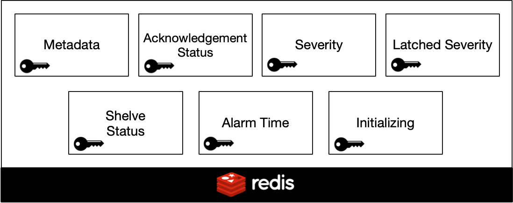
Metadata
Metadata of an alarm is static information about an alarm such as name, description, subsystem, component, etc. This information is not changed during runtime. Since the metadata is static, entire metadata of an alarm is stored against a single redis key in json format for easy retrieval. The static information is contained in a configuration file and loaded when Alarm Service starts up. The key name is formed with pattern: metadata-[SUBSYSTEM_NAME]-[COMPONENT_NAME]-[ALARM_NAME] e.g. metadata-nfiraos-trombone-tromboneaxislowlimitalarm.
The sample JSON below, shows structure of typical alarm metadata from the configuration file
{
"subsystem":"tcs",
"component":"corrections",
"name":"outOfRangeOffload",
"description":"Another system has sent an out of range offload that has caused the system to go into a bad state!",
"location":"Computer Room",
"alarmType":"absolute",
"supportedSeverities":[
"warning",
"major",
"indeterminate",
"okay"
],
"probableCause":"Bad software in NFIRAOS or WFOS",
"operatorResponse":"Reset the software system and hope",
"isAutoAcknowledgeable":false,
"isLatchable":true,
"activationStatus":"active"
}
Acknowledgement Status
Indicates Acknowledgement status of an alarm. The key name is formed with pattern ackstatus-[SUBSYSTEM_NAME]-[COMPONENT_NAME]-[ALARM_NAME]. e.g. ackstatus-nfiraos-enclosure-temphighalarm
Possible values of this key are:
acknowledgedunacknowledged
Severity
Indicates the current severity of an alarm. The key name is formed with pattern severity-[SUBSYSTEM_NAME]-[COMPONENT_NAME]-[ALARM_NAME].
e.g. severity-nfiraos-trombone-tromboneaxislowlimitalarm
This key can contain one of the following values at a given time -
okaywarningmajorindeterminatecritical
If the value is not present, it is considered to have disconnected severity.
Latched Severity
Indicates the severity on which the current alarm is latched. A latched severity is the max severity of an alarm since last reset operation. The key name is formed with pattern latchedseverity-[SUBSYSTEM_NAME]-[COMPONENT_NAME]-[ALARM_NAME]. e.g. latchedseverity-tcs-tcspk-cpuexceededalarm
Possible values of this key are:
okaywarningmajorindeterminatecriticaldisconnected
Shelve Status
Indicates shelved status of an alarm. The key name is formed with pattern shelvestatus-[SUBSYSTEM_NAME]-[COMPONENT_NAME]-[ALARM_NAME]. e.g. shelvestatus-nfiraos-trombone-tromboneaxislowlimitalarm
This key can have one of the following values
shelvedunshelved
If no value is present, it is inferred as unshelved
Alarm Time
Indicates the time of the last severity change of an alarm. The key name is formed with pattern alarmtime-[SUBSYSTEM_NAME]-[COMPONENT_NAME]-[ALARM_NAME]. e.g. alarmtime-nfiraos-beamsplitter-splitterlimitalarm
The value is stored in the format: 2019-04-03T11:09:28.404143Z
Initializing
Indicates whether alarm is initializing or its initialization is finished. It contains a boolean value either true or false
The key name is formed with pattern initializing-[SUBSYSTEM_NAME]-[COMPONENT_NAME]-[ALARM_NAME]. e.g. initializing-lgsf-tcspkinactive-cpuidlealarm
Alarm Disconnection
All the severities except Disconnected, need to be set explicitly. Disconnected is a special severity in the sense that it can never be set by a component explicitly and is always inferred when there is no severity value has been set. Alarm service uses Heartbeat pattern.
Whenever a component calls SetSeverity, severity get stored in redis for that alarm with certain TTL. This TTL is configurable. For our example, let’s assume it is 5 seconds. A TTL of 5 second means that if another call to SetSeverity is not made within 5 seconds, the current severity will get deleted from redis. Absence of severity is inferred as “Disconnected” severity.
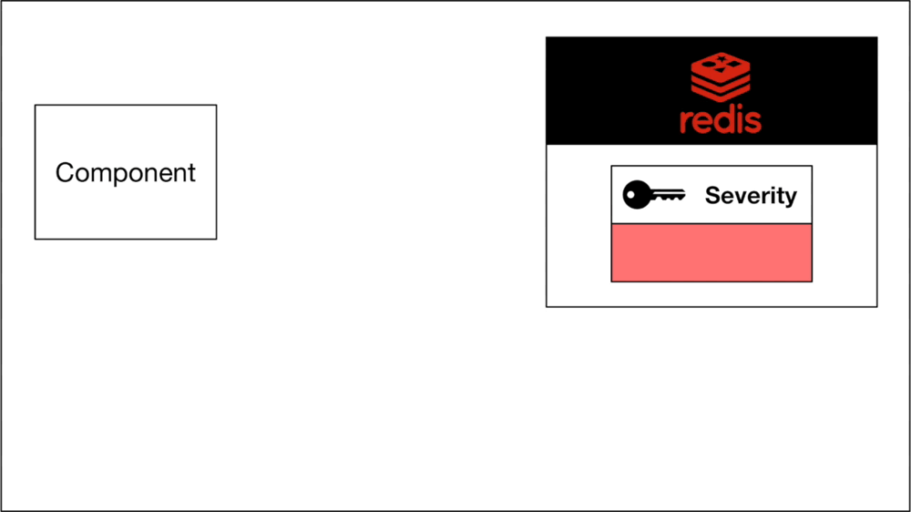
So to avoid disconnection of an alarm, the component will need to ensure that a SetSeverity call (aka heartbeat) is made with appropriate severity at-least once in every 5 seconds.
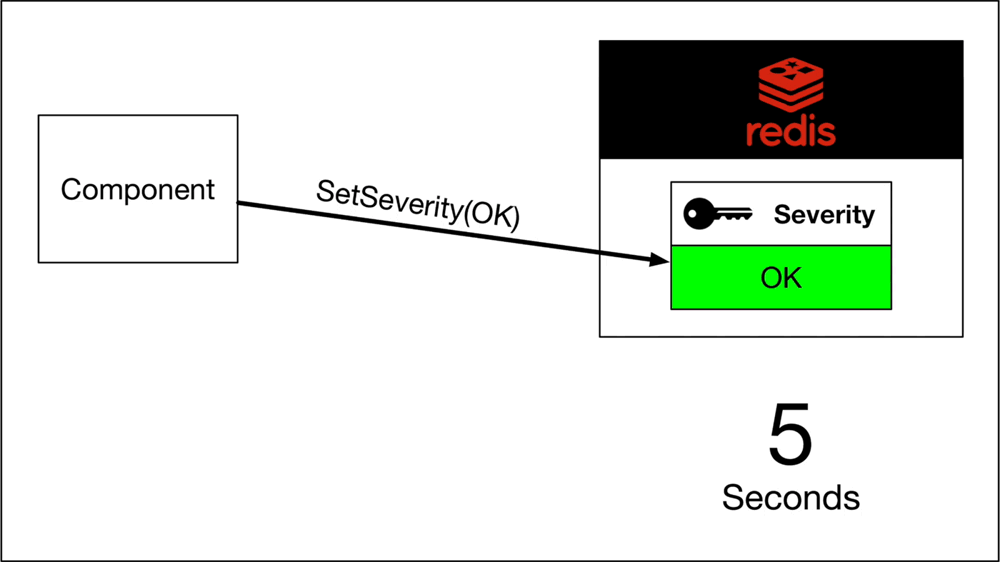
Actual TLL depends on refresh-interval & max-missed-refresh-counts configurations. For example, if refresh-interval is set to 3s (3 seconds) and max-missed-refresh-counts is set to 2, alarm will get disconnected after 6 seconds (3 * 2)
Using the heartbeat pattern allows us to detect dead or disconnected components automatically without polling them at regular intervals.
Severity Latching
Alarm metadata JSON has a boolean attribute called “isLatchable”. This determines the latching behaviour of an alarm. If an alarm is latchable, its latched severity sticks to the last highest severity reached until the alarm is reset. Reset operation is provided the admin api of alarm service.
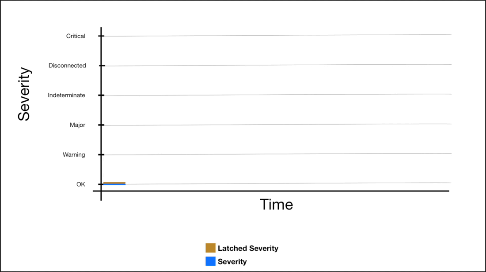
For, alarms which are not latchable, latched severity will always be equal to severity.
Setting severity and latched severity both is done by SetSeverity api. As described in previous sections, when a component dies, it can’t call SetSeverity and the severity key in redis, expires. However the “Latched Severity” is still not updated; which is a problem. To solve this problem, the future Alarm Server subscribes to all severity changes (using akka stream api of alarm service) and whenever it detects a key has expired, it updates its respective “latchedSeverity” value in Redis to disconnected.
Shelving Alarms
Alarms can be shelved and un-shelved using the Alarm Service API. A shelved alarm will contribute to a subsystem’s aggregate severity and health. An alarm can only be shelved for a predefined time. The time can be configured in Alarm Service configuration. For example:
shelve-timeout = "8:00:00 AM" // format -> h:m:s a
When changing the shelve status to shelved it is set using setex operation of redis with an appropriate TTL so that it gets expired on next shelve-timeout. Once expired, it is inferred as unshelved.
Alarms can also be un-shelved explicitly before next shelve-timeout occurs. unshelve api sets unshelved value in redis explicitly without any TTL.
Acknowledging Alarms
Alarms can be in either acknowledged or unacknowledged state. See Acknowledgement Status for more details. The state can be changed to acknowledged by simply using acknowledge api of alarm service. Apart from this api, setting severity can also change the Acknowledgement Status of an alarm.
Alarm can either be auto-acknowledgeable or not auto-acknowledgeable. This behavior is driven from alarm metadata. When an alarm is not auto-acknowledgeable, whenever it’s severity changes to anything except Okay, it’s Acknowledgement Status becomes acknowledged. If it is changing from any severity to Okay, Acknowledgement Status remains same.
When the alarm is auto-acknowledgeable, whenever it’s severity changes to Okay, it’s Acknowledgement Status becomes acknowledged. If it changes to anything else, Acknowledgement Status remains same.
API and Implementation Structure
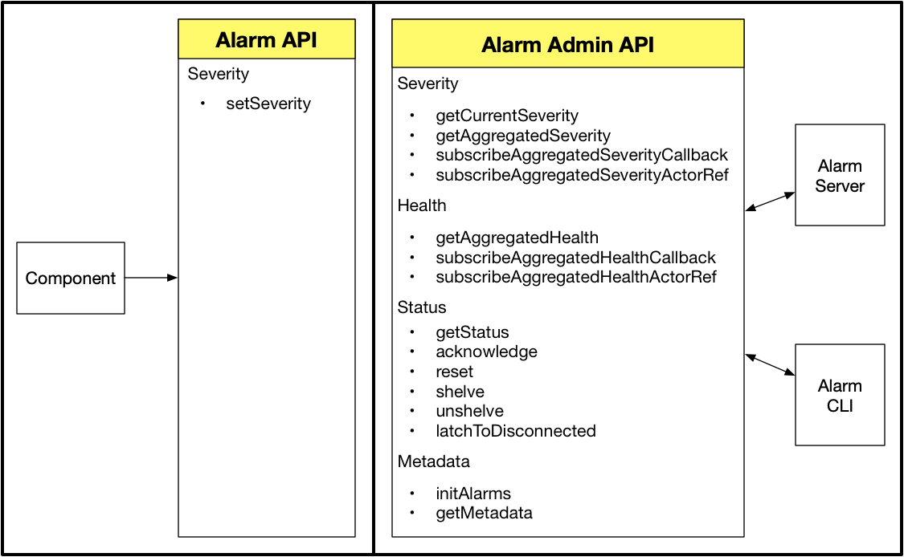
The alarm functionality divided into two services AlarmService and AlarmAdminService
AlarmService is meant for “Components” that can only set their current alarm severity and hence for components, Alarm Service only exposes one api i.e. setSeverity
AlarmAdminService is meant for admin operations.
The Alarm Service implementation is further divided into four internal modules.
SeverityServiceModule allows reading, subscribing and modifying severity of alarms and subsystems.
MetadataServiceModule allows read-only access to alarm metadata. Initialisation of alarms is also performed using this module.
StatusServiceModule allows read-write access to alarm status via operations such as getStatus, shelveAlarm, reset, acknowledge, unshelve, etc.
AlarmStatus is a logical entity which contains:
acknowledgementStatuslatchedSeverityshelveStatusalarmTimeinitializing
HealthServiceModule allows reading and subscribing to alarm and subsystem healths.
These modules are interdependent on each other and use self-type feature of scala
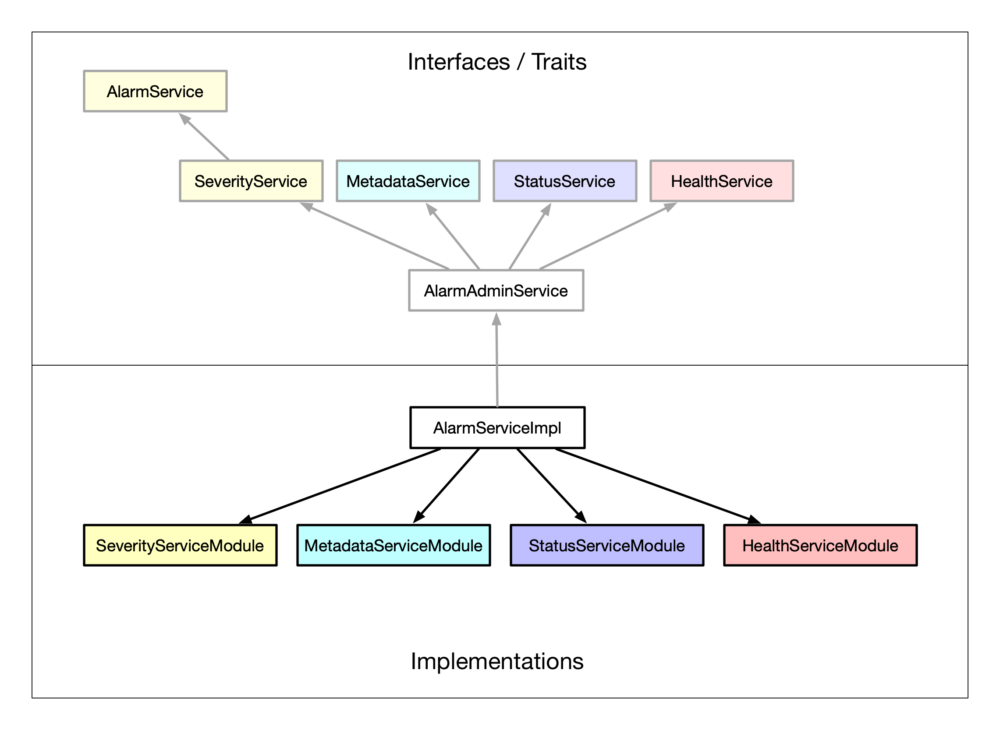
AlarmAdminService is consumed from alarm cli and Alarm Server. This API is also used by administrative clients such as the future Alarm Server.
The API doc for Alarm Service can be found here and here.
Detailed documentation about how to use these APIs is available here.
Setting severity execution workflow
The following diagram show execution sequence triggered when a component calls setSeverityApi
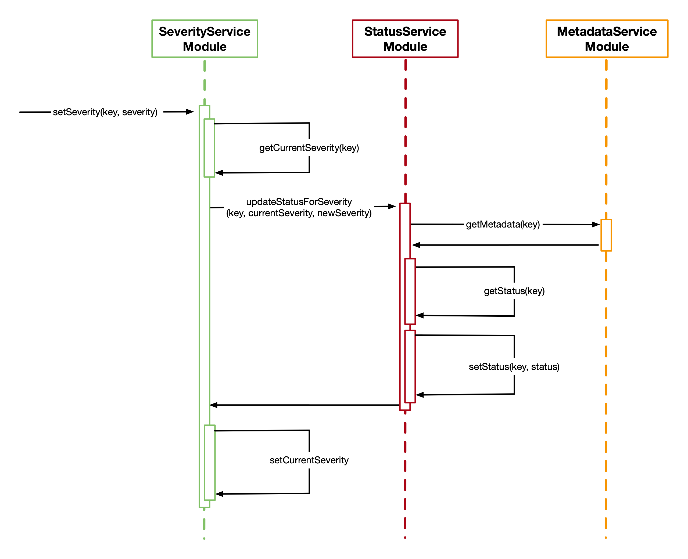
Architecture
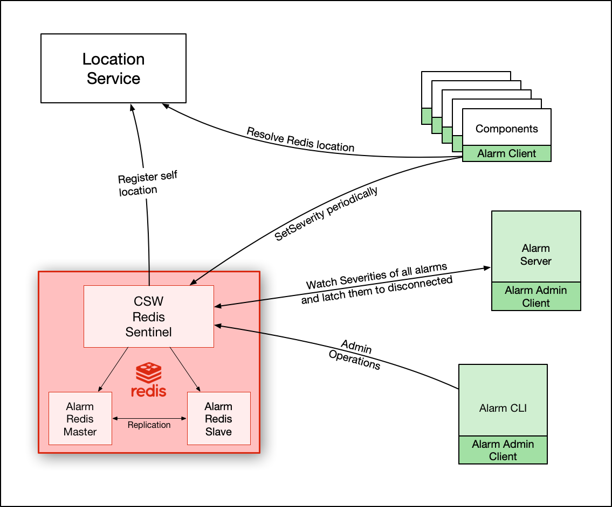
At the time of writing this documentation, the Alarm Server does not exist. It will be developed in future as part of ESW.HCMS. Its description and scope of work is subjected to change
For alarms to function, it is necessary that the Alarm Service’s Redis instance be registered with Location Service. Redis here is configured similar to other services in CSW. There is a master Redis instance and a slave Redis instance. They are configured in “replication” mode. There is a Sentinel instance who’s responsibility it is to promote the slave as master when master goes down. It is important to note that when master goes down, the “location” of Alarm Service remains the same because the location of Alarm Service is the location of Sentinel and not of master or slave. The master and slave Redis instances are dedicated for alarm, however Sentinel is shared across CSW Redis-based services.
Once location is registered, components, alarm CLI & Alarm Server can resolve Redis location and start interacting with it using the component alarm API & alarm admin API. While the interaction of components with Alarm Service is limited to the setSeverity API, Alarm CLI can perform all admin operations as discussed above.
Alarm Server is part of ESW.HCMS and is not yet built. When built, its functionality will be to watch all severity changes using the admin API and latch appropriate alarms to disconnected severity. Apart from this, it will also be responsible for logging alarms and generating alarm events for archiving in DMS.ENG. It provides an HTTP interface for various UI layer ESW.HCMS applications for alarm and health visualisations.